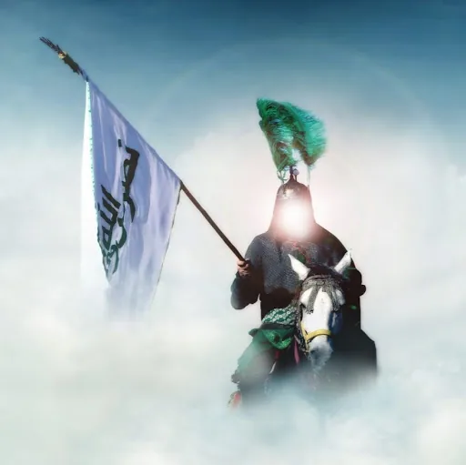

Die erfundenen apokalyptischen Ereignisse: Jesus, Mahdi, usw.
Im Koran wird gesagt, dass unsere Welt ein Ende haben wird. Dieses Ende der Welt wird als „die Stunde“ bezeichnet, und der Prozess, der mit unserer erneuten Schöpfung danach beginnt, wird als „Auferstehung“ (arabisch: Qiyama) beschrieben. Unter dem Begriff „Zeichen des jüngsten Tages“ versteht man Ereignisse, die in der Zeit unmittelbar vor dem Ende des Universums und der Welt eintreten sollen. Um zu zeigen, wie Erklärungen, die nicht im Koran stehen, den Menschen als „Wahrheiten“ untergejubelt werden und wie absurde Erfindungen im Namen des Islam entstanden sind, wird dieses Kapitel den „Zeichen des jüngsten Tages / apokalyptische Ereignisse“ gewidmet. Dabei werden zunächst die Themen behandelt, die trotz ihrer völligen Abwesenheit im Koran als unverzichtbare Glaubensgrundsätze des „Islam“ dargestellt werden und deren Nichtglauben sogar als Unglaube deklariert wird:
Anschließend werden wir uns mit Themen beschäftigen, die im Koran zwar in einigen wenigen Versen erwähnt werden, aber durch zahlreiche erfundene Hadithe maßlos ausgeschmückt und verfälscht wurden:

Mahdi und der Antichrist (Dadschal)
Der Mahdi ist die populärste Figur unter den Zeichen des Jüngsten Tages, über die die meisten Hadithe erfunden wurden und die am häufigsten für ideologische Zwecke missbraucht wird. Es wird geglaubt, dass diese Figur gemäß den Hadithen gegen Ende der Zeit erscheinen, alle besiegen, die Welt beherrschen und anschließend mit Jesus zusammentreffen und gemeinsam die Welt regieren wird. Während dieser Ereignisse soll er auch gegen den Antichristen (Dadschal) kämpfen. Hadithen zufolge besitzen nicht nur der Mahdi, sondern auch seine Anhänger außergewöhnliche Fähigkeiten. Um diese übernatürlichen Eigenschaften zu beweisen oder zu behaupten, dass der eigene Scheich oder Führer der Mahdi sei, wurden unzählige Hadithe erfunden. Daher gibt es viele widersprüchliche Berichte über das Aussehen des Mahdi, seine Taten und seinen Herkunftsort. Beispielsweise soll der Mahdi laut einem Hadith aus Damaskus, laut einem anderen aus Kufa, laut einem dritten aus Istanbul und laut einem weiteren aus Medina kommen. In den ersten Generationen des Islam wurden so viele Hadithe erfunden, um eigene Führer oder Scheichs als Mahdi zu präsentieren, dass spätere Generationen kaum neue erfinden mussten. Stattdessen akzeptierten sie die Hadithe, die mit ihren eigenen Führern übereinstimmten, und deuteten widersprüchliche Hadithe um oder erklärten sie für falsch. Wenn zum Beispiel der Führer einer Gruppe eine kleine Nase hatte, galt für sie der Hadith „Der Mahdi hat eine kleine Nase“ als wahr, während der Hadith „Der Mahdi hat eine Hakennase“ ignoriert oder abgelehnt wurde. In der muslimischen Welt herrscht geradezu eine „Mahdi-Inflation“. Würde man fragen, ob es heutzutage eine religiöse Gruppierung gibt, die ihren Führer nicht für den Mahdi hält, könnte die Antwort lauten: „Wie viele Gruppen halten ihren Führer nicht für den Mahdi?“
Überall wimmelt es nur von Mahdi´s
Um die traditionellen Gemeinschaften in der muslimischen Welt besser analysieren zu können, ist es wichtig, das Phänomen des Mahdi gründlich zu verstehen. Wir haben die zehn größten traditionellen islamischen Gemeinschaften in der Türkei aufgelistet und untersucht, ob sie ihren Anführer oder Scheich für den Mahdi halten. Dabei stellten wir fest, dass die Mehrheit ihren Führer tatsächlich als Mahdi betrachtet.375 Dies verdeutlicht, wie zentral das Konzept des Mahdi ist, um solche Gemeinschaften wirklich zu verstehen. (Beachten Sie, dass viele Gemeinschaften in Bezug auf die Mahdi-Thematik nicht offen sprechen. Selbst neuen Mitgliedern wird diese Information nicht sofort mitgeteilt. In vielen Gemeinschaften sind es nicht die Anführer selbst, sondern ihre engsten Vertrauten, die solche Behauptungen verbreiten.) Einige Hadithe berichten, dass der Mahdi selbst nicht behaupten wird, der Mahdi zu sein. Gemeinschaften deuten diese Überlieferung oft so, dass es besser sei, die angebliche Mahdi-Rolle ihres Anführers diskret, hinter verschlossenen Türen und ohne öffentliche Aufmerksamkeit zu propagieren. Die Idee des Mahdi verleiht einer Gemeinschaft große Stärke. Die Vorstellung, dass ihr Anführer die bereits vor 1400 Jahren beschriebene, außergewöhnlich herausragende Persönlichkeit sei, die mit Propheten gleichgestellt und dazu bestimmt ist, die Welt zu beherrschen, erzeugt bei den Anhängern eine extrem starke Loyalität. Unter diesem Einfluss geben die Anhänger all ihre Energie, ihr Vermögen und ihre Ressourcen in die Hände ihres Anführers. Sie wagen es nicht einmal, dessen Aussagen zu hinterfragen. Wer könnte es wagen, dem „Mahdi, der die Welt erobern wird“, entgegenzutreten? Diejenigen, die ihren Führer als Mahdi verehren, werden mit der Vorstellung „Wir sind die wertvollen Schüler des Mahdi“ eingelullt, als ob sie bereits vor 1400 Jahren in den Hadithen erwähnt worden wären. Die Vorstellung, dass der Mahdi ein Kalif sein wird, hat einige Gruppen dazu inspiriert, Pläne für Aufstände oder Putschversuche zu schmieden, um ihren Anführer in eine solche Position zu bringen. Die islamische Geschichte ist voller Beispiele von selbsternannten Mahdis, die Aufstände ausgelöst und den Tod von Hunderten verursacht haben.
Die Macht des Mahdi-Titels bei Khomeini
Im Schiitentum ist der Glaube an den Mahdi ein essenzieller Bestandteil des Glaubensbekenntnisses und wird noch stärker betont als im Sunnitentum. Eine zentrale Überzeugung der Schiiten ist, dass der Muhammad al-Mahdi, der Sohn von Hasan al-Askari, ist, der im Jahr 256 nach der Auswanderung (Hidschra) geboren wurde, sich jedoch verbarg und eines Tages zurückkehren wird, um seine göttliche Mission zu erfüllen. Angesichts der Tatsache, dass wir uns nach islamischer Zeitrechnung im 15. Jahrhundert befinden, bedeutet dies, dass der Mahdi nach schiitischer Überzeugung seit mehr als 1100 Jahren ein verborgenes Leben führt. Das Verständnis dieses Glaubens ist auch entscheidend, um schiitische Regierungen und die iranische Revolution zu analysieren. Nach schiitischer Lehre werden bis zur Rückkehr des Mahdi seine Stellvertreter die Herrschaft führen, und Ungehorsam gegenüber diesen Stellvertretern gilt als Ungehorsam gegenüber dem Mahdi – was wiederum als Rebellion gegen Gott betrachtet wird. Ayatollah Khomeini wurde als ein solcher Stellvertreter des Mahdi angesehen. Dies verlieh ihm die Macht, das Volk zu kontrollieren und zu lenken, gestützt auf die religiöse Pflicht, den Mahdi und somit auch seine Stellvertreter zu gehorchen. Khomeinis Status als Stellvertreter des Mahdi machte den Gehorsam gegenüber ihm für Schiiten zu einer religiösen Pflicht. Dieser Glaube war ein wesentlicher Faktor für die Einheit und Loyalität, mit der das Volk die Revolution unterstützte und ohne größere interne Spaltungen agierte. Der Erfolg der iranischen Revolution ist eng mit diesem Konzept des Mahdi-Glauben verbunden. Während es im Sunnitentum Tausende von selbsternannten Mahdis gibt, erkennt das Schiitentum einen einzigen Mahdi an, der sich in der Verborgenheit befindet. Dennoch haben allein die Stellvertreter dieses Mahdi, wie Khomeini, durch ihren Status genug Autorität, um Revolutionen anzuführen und politische Macht zu erlangen.
Der Antichrist (Dadschal), der die Toten erweckt
Der Antichrist (Dadschal) ist die Figur, gegen die der Mahdi kämpfen soll. Gruppen, die ihre Anführer als Mahdi proklamieren, neigen dazu, jene, die sich gegen ihren Führer stellen oder entgegengesetzte Ansichten vertreten, kurzerhand als Antichrist zu bezeichnen. Der Dienst am Mahdi wird als religiöser Akt angesehen, und der Kampf gegen den Antichrist – sei es auf militärischer oder ideologischer Ebene – wird ebenfalls als gottesdienstliche Handlung betrachtet. Hadithsammlungen beschreiben sowohl den Mahdi als auch den Antichrist. Doch während es klare Definitionen in den Überlieferungen gibt, hat die Praxis, tausende Führer als Mahdi und ebenso viele Gegner als Antichrist zu deklarieren, die Sache ins Absurde geführt. In den Hadithen wird der Antichrist als ein Wesen beschrieben, das über eine falsche Vorstellung von Paradies und Hölle verfügt, Tote zum Leben erwecken kann, die Aufschrift „Ungläubiger“ auf der Stirn trägt, blind ist und als die größte Prüfung gilt, die die Menschheit jemals erlebt hat.
Die Antwort der Koranverse auf Mahdi und Antichrist? Absolutes Schweigen! Kein einziger Vers des Korans erwähnt diese Figuren, und doch haben diese fiktiven Charaktere Tausende von Menschen dazu gebracht, sich hinter vermeintlichen Mahdis zu versammeln, während sie deren Feinde als Antichrist verfluchten. Dieser Glaube hat zu Blutvergießen und einer Art „islamischer Mythologie“ geführt. Die Erwartung eines Mahdis, der in jeder Epoche als Retter erscheinen soll, hat viele Menschen in Passivität verfallen lassen. Anstatt aktiv an einer Lösung zu arbeiten und eigene Anstrengungen zur Verbesserung ihrer Lage zu unternehmen, setzten diese Gläubigen ihre Hoffnung auf die Erlösung durch einen kommenden Mahdi. Gleichzeitig nutzten die Anhänger der verschiedenen Sekten die Figur des Antichrist, um Schuld an der eigenen Unterdrückung, Rückständigkeit oder wissenschaftlichen Rückschritt zu externalisieren, anstatt die Ursachen bei sich selbst zu suchen und eigenverantwortlich zu handeln.
Die Behauptung von Jesus’ Rückkehr
Obwohl im Koran keine Erwähnung davon gemacht wird, gibt es die Behauptung, dass Jesus gegen Ende der Welt erneut auf die Erde kommen werde. In den Hadithen wird beschrieben, dass Jesus im Osten von Damaskus an einer weißen Minarette herabsteigen, sich mit dem Mahdi treffen und den Antichristen töten werde. Ein Hadith, der in den traditionell anerkannten Werken von Buchari und Muslim über Abu Huraira überliefert wird, lautet:
„Bei Gott, ich schwöre, dass das Herabsteigen von Jesus als gerechter Richter unter euch nahe ist. Wenn er herabsteigt, wird er die Kreuze zerbrechen, die Schweine töten, die Kopfsteuer abschaffen, den Affen töten und außer dem Islam nichts akzeptieren.“
Diese Überlieferung, die möglicherweise von frühzeitigen Übertritten aus dem Christentum in den Islam verbreitet wurde, widerspricht auch den Koranversen.
Hüseyin Atay kommentiert diesen Vers mit den Worten: „Die im Koran über Jesus gegebenen Informationen zeigen, dass er gestorben ist, jedoch nicht getötet wurde. Jesus ist also tot, lebt nicht und wird nicht auf die Erde zurückkehren. Glaubensgrundsätze können nicht durch Hadithe festgelegt und dem Koran hinzugefügt werden. Nach dem Tod Muhammads wurden Geschichten aus der christlichen Mythologie in die islamische Literatur übernommen, darunter die Erzählung, dass Jesus nicht gestorben sei, sondern in den Himmel erhoben wurde und kurz vor dem Weltuntergang von der Minarette in Damaskus herabsteigen werde. Diese Christianisierung wurde in den Glauben der Muslime integriert, sodass sogar jene, die dies ablehnen, von vermeintlich Vernünftigen als Ungläubige angesehen werden.“376
Koran 33:40
Dieser Vers macht deutlich, dass Muhammad der letzte Prophet ist. Da Jesus als Prophet bezeichnet wird, würde seine Rückkehr nach Muhammad dem Koran widersprechen.
In dem obigen Koranvers 19:33 spricht Jesus selbst über drei bedeutende Tage seines Lebens. Es wird jedoch kein Tag erwähnt, an dem Jesus vor dem Ende der Welt wieder auf die Erde zurückkehrt. Wenn ein solcher Tag existieren würde, wäre er sicherlich nicht Hadithen voller Widersprüche und Zweifel überlassen worden, sondern klar und zweifelsfrei im Koran verkündet worden.
Leider hat die Geschichte von der Rückkehr Jesu, die weder im Koran erwähnt noch mit ihm vereinbar ist, die Entstehung zahlreicher falscher Messias zur Folge gehabt. Wie bei der Mahdi-Inflation gibt es auch eine Jesus-Inflation, bei der viele fälschlicherweise behaupten, der wiedergekehrte Jesus zu sein.
Gog und Magog (Yadschudsch und Madschudsch)
Gog und Magog (Yadschudsch und Madschudsch) ist der Name eines Volkes, das im Koran erwähnt wird. Während Mahdi, Antichrist (Dadschal) und die Wiederkunft Jesu im Koran keine Erwähnung finden, werden diese Figuren dennoch oft als „Zeichen des Jüngsten Gerichts“ dargestellt. Ebenso gibt es zu Gog und Magog zahlreiche Erklärungen, die nicht im Koran stehen und sogar diesem widersprechen, um dieses Thema angeblich weiter zu detaillieren. Im Koran wird Gog und Magog an zwei Stellen wie folgt beschrieben:
Wir haben die Verse über Gog und Magog zitiert, um die koranischen Inhalte von den später hinzugefügten Überlieferungen unterscheiden zu können. Eine dieser Überlieferungen behauptet beispielsweise, dass Gog und Magog aus den im Traum von Adam auf die Erde gefallenen Samenzellen entstanden sei. Eine andere Erklärung lautet, dass Gog und Magog ein unter der Erde lebendes Volk von etwa einer Elle Größe sei, das gegen Ende der Welt auf die Oberfläche kommen werde. Ibn Abbas zufolge sollen sie in drei Klassen unterteilt sein: Die erste Klasse sei so groß wie Bäume, die zweite vier Ellen hoch und vier Ellen breit, während die dritte ihre Ohren als Matratze und Decke benutze. Noch kurioser ist die Überlieferung, die Gog und Magog mit den Türken gleichsetzt.377 Die Vielfalt und Widersprüchlichkeit dieser Überlieferungen zeigen, wie stark das ursprüngliche Thema durch spekulative Ergänzungen verzerrt wurde.
Das mystische Wesen (Dabba)
Im Koran wird Dabba in einem einzigen Vers als ein zukünftiges Ereignis erwähnt. Ähnlich wie bei Gog und Magog (Yadschudsch und Madschudsch) wurde das Thema Dabba mit erfundenen, mythologischen Hadithen ausgeschmückt, was wie gewohnt zu einem absurden Ergebnis geführt hat. Zuerst der Vers im Koran, der sich auf Dabba bezieht:
Trotz dieses einzigen Verses wurden zahlreiche bizarre Hadithe über Dabba in Umlauf gebracht. Einer der ungewöhnlichsten lautet: „Dabba hat einen Kopf wie ein Ochsenkopf, Augen wie Schweinsaugen, Ohren wie Elefantenohren, Hörner wie Ziegenhörner, einen Hals wie der eines Straußes, eine Brust wie die eines Löwen, eine Farbe wie Braun, eine Flanke wie die einer Katze, einen Schwanz wie ein Widder und Füße wie Kamelhufe.“378
Noch seltsamere Hadithe beschreiben Dabba mit einem Kopf, der den Himmel berührt, einem Schwanz, der sich über die Pole erstreckt, und Füßen, die sich über die Arabische Halbinsel verteilen. Manche Überlieferungen behaupten sogar, Dabba trage in einer Hand den Siegelring Salomos und in der anderen den Stab Moses. Wie bei anderen Themen zeigt auch dieses Beispiel, welche grotesken Vorstellungen entstehen, wenn Koran-externe Quellen zur Grundlage islamischer Interpretationen gemacht werden.